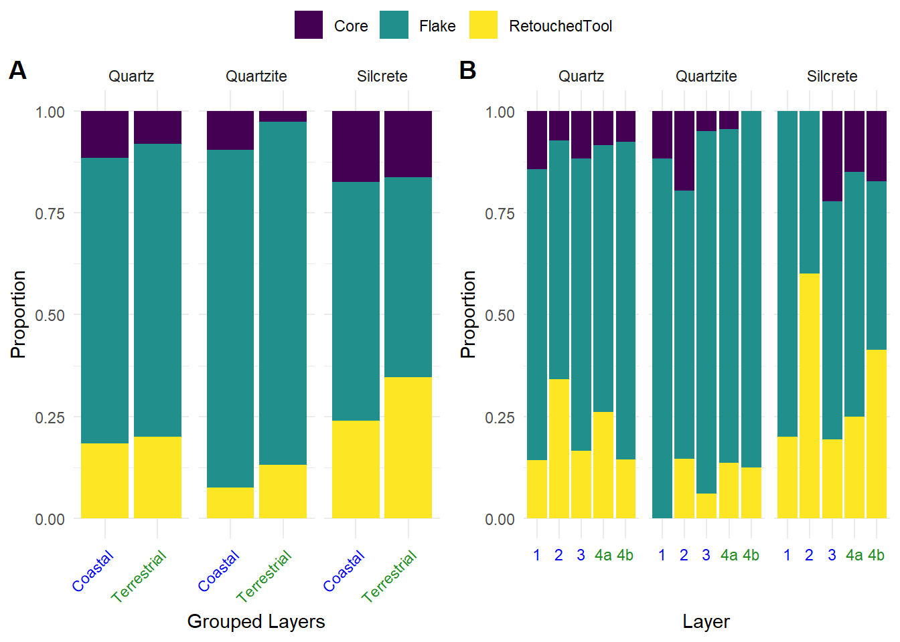
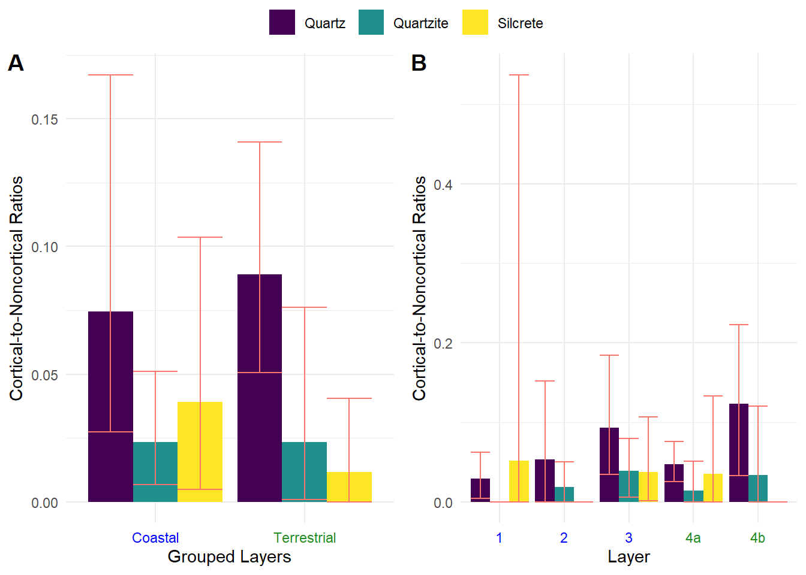
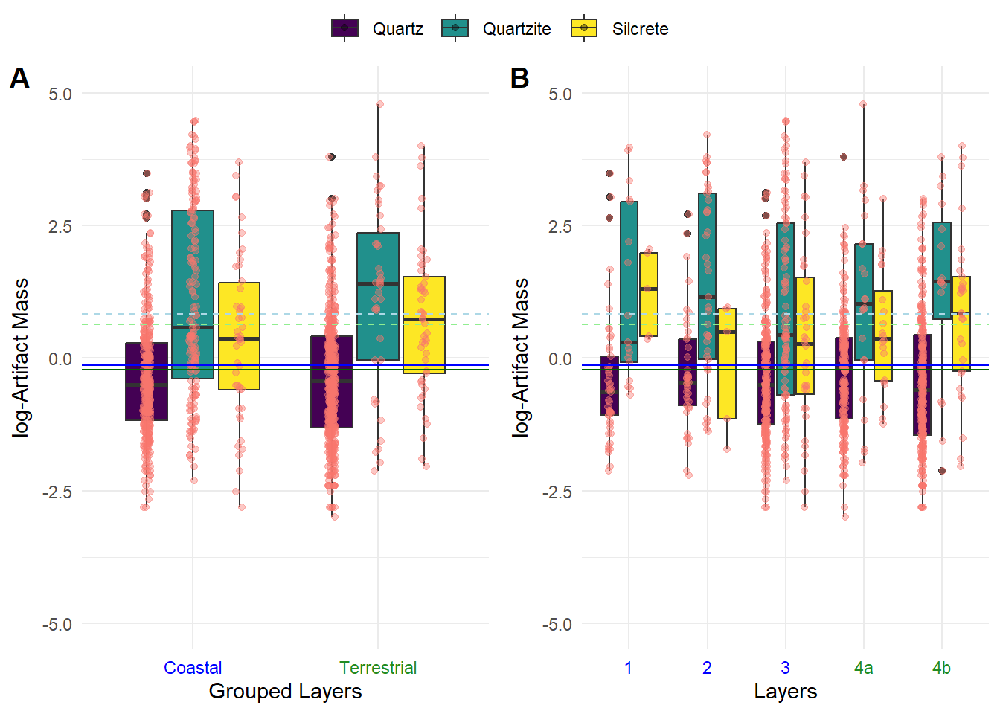
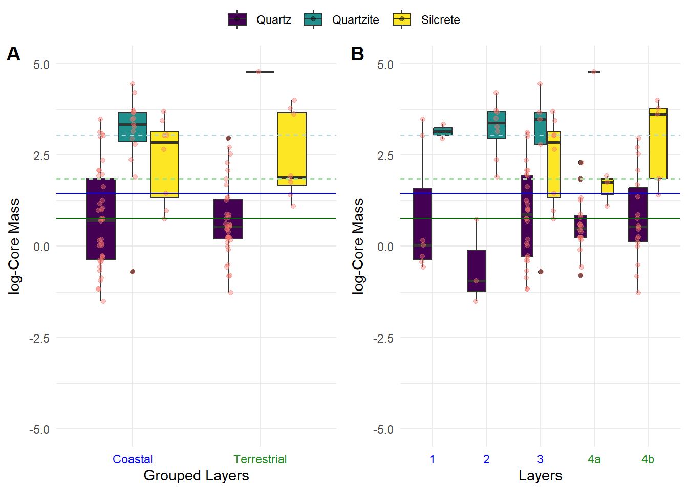
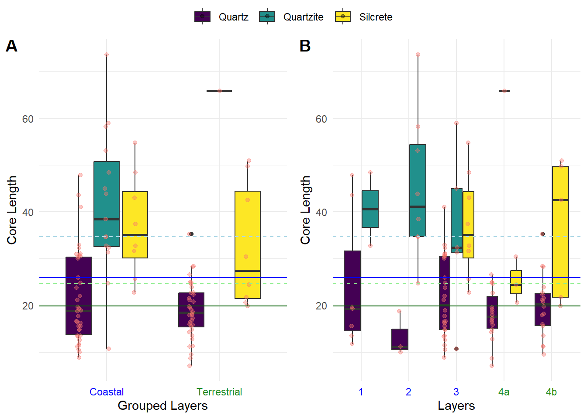
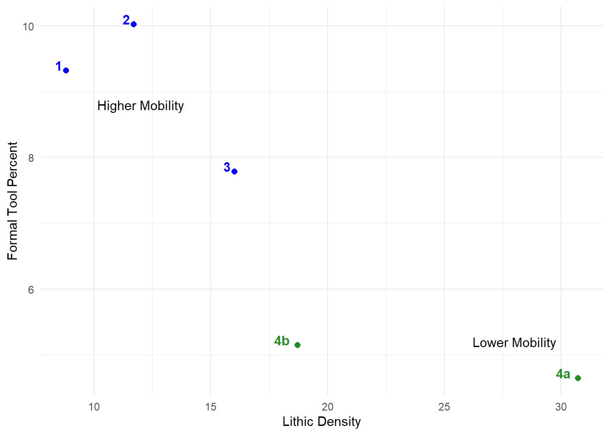
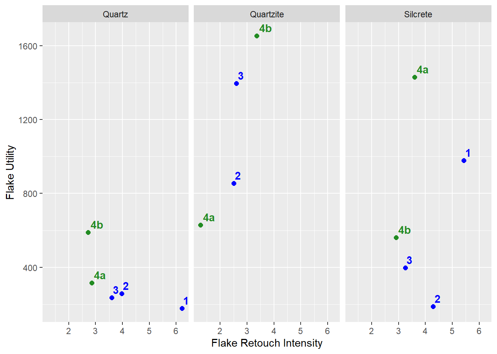
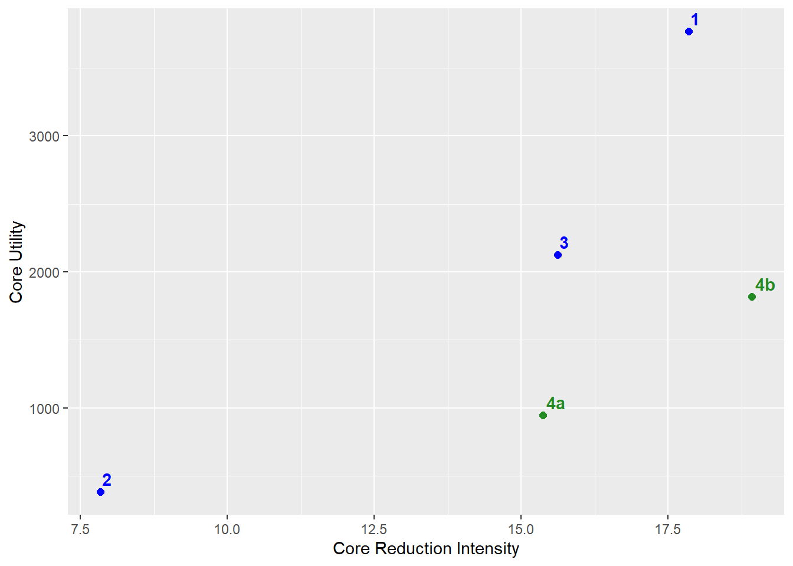
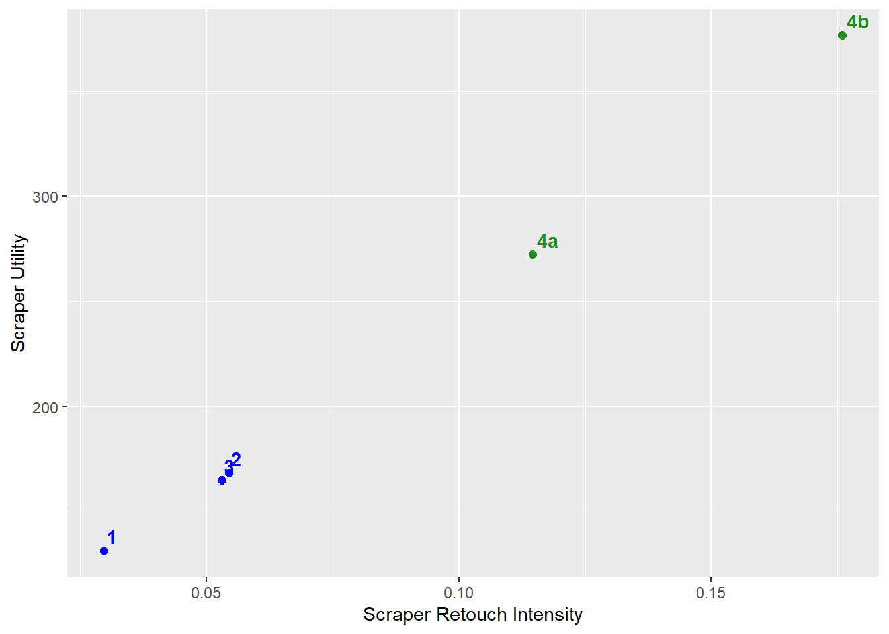

Quartz
|
Quartzite
|
Silcrete
|
||||||||||
|---|---|---|---|---|---|---|---|---|---|---|---|---|
| N | Core N = 741 |
Flake N = 5561 |
Retouched tools N = 1511 |
N | Core N = 161 |
Flake N = 1631 |
Retouched tools N = 171 |
N | Core N = 161 |
Flake N = 511 |
Retouched tools N = 281 |
|
| Layer | 781 | 196 | 95 | |||||||||
| 1 | 7 (9.5%) | 35 (6.3%) | 7 (4.6%) | 2 (13%) | 15 (9.2%) | 0 (0%) | 0 (0%) | 4 (7.8%) | 1 (3.6%) | |||
| 2 | 3 (4.1%) | 24 (4.3%) | 14 (9.3%) | 8 (50%) | 27 (17%) | 6 (35%) | 0 (0%) | 2 (3.9%) | 3 (11%) | |||
| 3 | 28 (38%) | 173 (31%) | 40 (26%) | 5 (31%) | 89 (55%) | 6 (35%) | 8 (50%) | 21 (41%) | 7 (25%) | |||
| 4a | 18 (24%) | 141 (25%) | 56 (37%) | 1 (6.3%) | 18 (11%) | 3 (18%) | 3 (19%) | 12 (24%) | 5 (18%) | |||
| 4b | 18 (24%) | 183 (33%) | 34 (23%) | 0 (0%) | 14 (8.6%) | 2 (12%) | 5 (31%) | 12 (24%) | 12 (43%) | |||
| 1 n (%) | ||||||||||||
Steenbokfontein Preliminary Results
Methods
Here, we examine whether hunter-gatherer technological strategies changed as they increased their focus on coastal resources at Steenbokfontein (SBF). To accomplish this, we examine 1) raw material distribution and surplus, 2) lithic tool utility and reduction intensity, and 3) retouch intensity. These data inform us about where hunter-gatherers procured, transported, maintained, and discarded their lithic technology. Technological changes between coastal and terrestrial layers imply that hunter-gatherer coastal adaptations at SBF fundamentally changed their technological strategies.
Raw material and toolkit composition
Toolkit composition refers to the raw material distribution, surplus, and relationship between cores, flakes, and retouched tools. Raw material distribution and surplus are both directly linked to where hunter-gatherers procure, transport, and reduce their lithic tools (andrefsky1994?; andrefsky2009?; binford?; Dibble et al. 2005; kuhn1992?; kuhn1994?; nelson1991?). Shifts in local and non-local raw materials can inform us about changes in hunter-gatherer mobility patterns (andrefsky1994?; kelly1983?) . For instance, a reduction in non-local raw material may imply reduced hunter-gatherer movement across the landscape (kelly1992?). To evaluate this pattern, we examine changes in the proportion of raw material over time at SBF. Shifts in raw material distribution and reduced mobility will likely reflect the amount of surplus hunter-gatherers store at SBF (Surovell 2009).
We use the relative size of lithics to evaluate whether raw material surplus changes between layers associated with coastal and terrestrial resource use (see mackay2009?) . Firstly, we extract the 50th and 75th percentile of lithic mass for layers associated with coastal resource use and terrestrial resource use. Then, for each raw material, we contrast these percentiles against 1) all lithic mass, 2) only core mass, and 3) maximum core length. If the average mass or length intersect the 75th percentile, then there is more raw material surplus than we would expect in that layer. If the average mass or length is at the 50th percentile, then this reflects the average expectation for the layer. If the average mass or length fall below the 50th percentile, then this reflects less raw material surplus than we would expect. As hunter-gatherers focus on coastal resources, we expect raw material surplus to increase.
We can also use lithic density, number of flakes, cores, and retouched tools to explore the composition of toolkits. Changes in the frequency of flakes, cores, and retouched tools can inform us about mobility strategies and allude to site function (kelly1988?; kelly1992?; nelson1991?) . For instance, an emphasis in retouched tools over flake production can suggest hunter-gatherer groups with higher mobility and a site that may be associated with logistical foraging patterns. Greater frequency of cores and flake production can reflect lower mobility and sites associated with residential patterns (barton?; binford?; kelly1992?). To evaluate whether the composition of hunter-gatherer toolkits change as they focus on coastal resources, we look at 1) percent of retouched tools to lithic density, 2) retouched flakes-to-unmodified flakes, and 3) retouched flakes-to-cores.
Lithic tool utility and reduction intensity
Surovell (2009) and Kuhn (kuhn1994?) explain lithic utility as the remaining portion of the lithic that can still be reduced. They define lithic utility for flakes (\(f_u\)) and retouched tools (\(f_u\)) as:
\[ f_u=l*(l-m) \]
where l is the length of the tool and m is the slug, or the smallest usable length for the tool. We define core utility (\(c_u\)) as the total volume remaining that could be reduced further. We use this equation to estimate the utility of faks and retouched tools at SBF. However, since there are increasing occurrences of microlithic technologies in Africa and Europe that are measured less than one centimeter (e.g. ambrose2002?; belfer-cohen2002?; hiscock2015?; mitchell1988?; pargeter2016?) , subtracting by the slug is likely negligible.
We define core utility as the remaining volume. Use the formula for an ellipse to estimate the remaining core volume at SBF (see Dibble et al. 2005):
\[ c_u=\pi*\frac{4}{3}*a*b*c \]
where a, b, and c the semi-axis measurements for the maximum length, width, and thickness.
We adopt Lombao et al.’s (lombao2020?; lombao2023?) definition for reduction intensity as the amount of total volume removed from a core or tool. Previous studies have used several distinct metrics to quantify the degree of reduction intensity including volumetric reconstruction (lombao2020?; lombao2023?), scar density index (SDI) (clarkson2013?) , and a comparison between core and flake size. To compute the general reduction intensity for SBF, we average each core’s maximum flake scar and subtract this by each flake’s technological length. We then contrast this value against flake utility. For cores, we estimate the amount of volume removed from each core via Lombao et al.’s (lombao2020?; lombao2023?) volumetric reconstruction. We then contrast this against the remaining core utility. From here, we can measure changes in lithic utility, reduction intensity, and the interaction between utility and reduction intensity through SBF.
Retouch intensity
Flakes
For retouched flakes, we contrast the remaining utility against the retouch intensity. To compute retouch invasiveness, we combine three different metrics: edge-to-flake thickness, the number of regions that shows retouch, and retouch invasiveness (Clarkson 2002; Surovell 2009). We multiply these together to estimate the degree of flake retouch intensity. Edge-to-flake thickness is the ratio between the edge thickness and maximum tool thickness. For the number of regions, we segregated the flake into eight equal segments and counted how many of the eight segments contained retouch scars. Lastly, retouch invasiveness is the degree in which the retouched flake scars protruded towards the center of the flake (e.g., Clarkson 2002). Flake scars contained to the margins were given a score of 0.5 and the flake scars towards the center were given a score of 1. We averaged these scores for each of the eight regions to get an invasiveness score. Then, we were able to contrast the flake utility against the combined metric for retouch intensity.
Scrapers
Scrapers are the most abundant retouched tool at SBF and so, we explore how the utility and retouch intensity changes between layers associated with coastal and terrestrial resources. We use the same utility measurement described above to calculate scraper utility. Since all scrapers are unifacial, we adopt Eren et al.’s (eren2005?; see also kuhn1990?) approach to quantify the retouch intensity of unifacial tools (V). To accomplish this, we apply their geometric equation to all scrapers at SBF:
\[ V = \frac{L D^2}{2} \left( \sin^2(a) \cot(b) - \sin(a) \cos(a) \right) \]
where L is the length of the retouched edge, D is the retouched length, a is the retouched angle, and b is the angle where the central and dorsal planes meet. With these metrics, we can measure shifts in scraper utility and retouch intensity through time at SBF.
Results
Raw material distribution
Table 1 and Figure 1 show the distribution of artifact type by raw material. Figure 1 shows the raw material distribution by individual layer and lumped into layers associated with coastal (layers 1-3) and terrestrial diets (layers 4a and 4b). These data suggest that, as hunter-gatherer focus on coastal resources, there is a decrease in the proportion of retouched tools for all raw materials and increase in cores (Figure 1 (a)) . Figure 1 (b) shows a more nuanced raw material pattern. As silcrete cores decrease towards layer 2, there is an increase in quartzite cores. At the same time, silcrete and quartz retouched tools increase during layer 2. Additionally, table 1 shows a general decrease in silcrete materials through SBF, implying hunter-gatherers reduced the amount of silcrete brought into SBF. Together, these patterns reflect shifts in hunter-gatherer toolkits and raw material transportation when diets become centered around coastal foods.
An analysis of cortical-to-noncortical flakes (Figure 2) further implies significant shifts in raw material transport. Figure 2 (a) shows that silcrete has the lowest cortical-to-noncortical ratios for layers associated with terrestrial diets, suggesting greater cortical silcrete. As hunter-gatherers focused on coastal resources, silcrete reflects similar ratios for quartz and quartzite. Figure 2 (b) shows a general decrease in quartz ratios through SBF, implying a greater proportion of non-cortical quartz flakes through time. These shifts in cortical-to-noncortical ratios confirm that hunter-gatherer modified where they procured raw material and where, on the landscape, they removed cortical pieces before transporting them into SBF.


Raw material surplus
Figure 3 explore the relationship between raw material surplus and raw material distribution. Firstly, the 50th and 75th percentile for all artifact mass (Figure 3) is not significantly different, implying identically distributed distributions for artifact mass when between layers associated with coastal and terrestrial resource consumption. A Bayesian ANOVA shows no significant shifts within raw materials between layers, but there are significant difference between raw materials. Specifically, quartzite and secrete are consistently above the 75th percentile in both the grouped (a) and individual layers (b). This suggests there was a greater surplus of quartzite and silcrete at SBF, but this is not correlated with terrestrial or coastal diets.
Figure 4 and Figure 5 explore the relationship between raw material surplus, core mass, and core maximum length. Here, there is a significant difference between the mass and maximum length between layers associated with coastal and terrestrial resource use. In both figures, the terrestrial layers have, on average, smaller cores than layers associated with coastal resource use. A reduced sample size for cores increases the statistical uncertainty, but the posterior distribution for a Bayesian ANOVA still suggests no significant difference within raw material with significant shifts between raw material through SBF. Compared with the 50th and 75th percentile, quartzite and silcrete align with the 75th percentile for every layer. However, for terrestrial layers, quartz cores fall in line with the 50th percentile but fall well below this threshold when hunter-gatherers focus on coastal resources. Overall, quartzite and silcrete have, on average, larger cores while the quartz cores are significantly smaller. Moreover, quartz cores are well below average size when hunter-gatherers focus on coastal resources, which may imply reduced quartz resource surplus during these intervals.



Toolkit composition
Figure 6 shows the relationship between the percent of formal tools and lithic density through SBF. The expectation is that more formal tools and lower lithic density reflects hunter-gatherers that move more frequently. Fewer formal tools and a higher lithic density reflects hunter-gatherers with lower mobility strategies. Figure 6 implies the layers associated with coastal resource exploitation (1, 2, and 3) are associated with higher mobility and the layers associated with terrestrial resources (4a and 4b) are associated with lower mobility. This result contradicts our initial hypothesis that expects reduced mobility when hunter-gatherers at SBF a focused on terrestrial resources.

Flake utility and reduction intensity

Retouched flake utility to retouch intensity

Cores

Scraper utility and retouch intensity

References
Clarkson, Chris. 2002. “An Index of Invasiveness for the Measurement of Unifacial and Bifacial Retouch: A Theoretical, Experimental and Archaeological Verification.” Journal of Archaeological Science 29 (1): 65–75. https://doi.org/10.1006/jasc.2001.0702.
Dibble, Harold L., Utsav A. Schurmans, Radu P. Iovita, and Michael V. McLaughlin. 2005. “The Measurement and Interpretation of Cortex in Lithic Assemblages.” American Antiquity 70 (3): 545–60. https://doi.org/10.2307/40035313.
Surovell, Todd A. 2009. Toward a Behavioral Ecology of Lithic Technology: Cases from Paleoindian Archaeology. Tucson, UNITED STATES: University of Arizona Press. http://ebookcentral.proquest.com/lib/nyulibrary-ebooks/detail.action?docID=3411796.